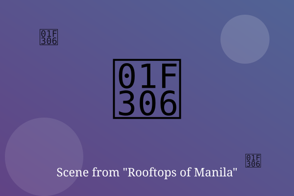

Chapter 1: Before the Sun Rises

The oven was lit at 3 a.m., just as Papa always did. Ana kneaded the dough with hands that still shook.
Her sister Bea counted the money again, and again it was not enough. Neither of them said so out loud.
When the first pandesal came out golden, the smell filled the street. A neighbor knocked on the door, then another.
— End of Chapter —